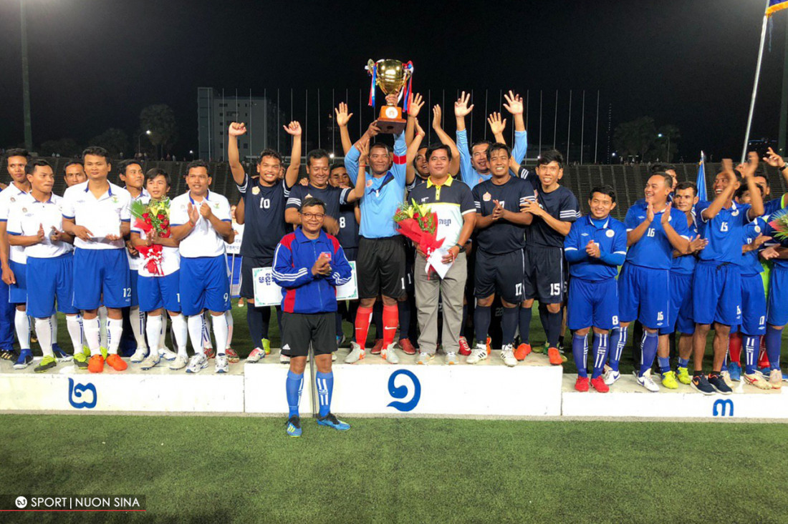

ឯកឧត្ដម
ហង់ជួន ណារ៉ុន រំលឹកកាលពេលប្រកួតជម្រុះពានរង្វាន់បាល់ទាត់ក្រសួងអប់រំ យុវជន និងកីឡា ថាមានតែលោកទេដែលសប្បាយជាងគេ ព្រោះបានលេងឲ្យស្ទើរគ្រប់ក្រុមដោយមិនគិតចាញ់ឈ្នះ ប៉ុន្តែមានក្រុមខ្លះក៏ខ្ចីបោះបាល់ឲ្យដែរខ្លាចខូចបាល់គេ។
រដ្ឋមន្ត្រីក្រសួងអប់រំខាងលើ លើកឡើងក្នុងពិធីបិទការប្រកួតពានរង្វាន់ក្រសួងថា សូមកោតសរសើរ និងការខំប្រឹងប្រែងពីសំណាក់ក្រុមចូលរួមទាំងអស់ ជាពិសេសខាងត្បូងឃ្មុំ ដែលព្យាយាមអភិវឌ្ឍន៍សមត្ថភាពកីឡារបស់ខ្លួនរហូតឈ្នះពានរង្វាន់ជាបន្តបន្ទាប់ថ្មីៗនេះ។
ឯកឧត្ដមក៏រំលឹករឿងអស់សំណើចខ្លះៗនាការប្រកួតជម្រុះរហូតដល់វគ្គផ្ដាច់ព្រ័ត្រនេះថា មានក្រុមខ្លះហៅលោកឲ្យចូលលេងជាមួយ ដោយមិនខ្វល់ថាទាត់ខ្លាំង ឬខ្សោយនោះឡើយ ពោលស្វាគមន៍ជានិច្ច។ ប៉ុន្តែក្រុមខ្លះ ពេលលោកចូលលេងហើយ មិនហ៊ានបោះបាល់មកឲ្យនោះទេ ខ្លាចខូចបាល់គេ ជាក់ស្ដែងដូចវគ្គផ្ដាច់ព្រ័ត្រក៏ចង់ចូលលេងដែរ តែគេមិនដូរឲ្យ ព្រោះវគ្គសំខាន់លេខ១-២ ផងដូច្នេះមានតែរត់ក្បែរៗគេប្រកួតនោះទៅ ណាមួយបានមើលជិតគេទាត់ផង។
រំលឹកដែរថា ការប្រកួតបាល់ទាត់ពានរង្វាន់ក្រសួងអប់រំ យុវជន និងកីឡា លើកទី២នេះបានបញ្ចប់នាល្ងាចម្សិលមិញនេះហើយ ដោយក្រុមលេខ១ បានទៅលើមន្ទីរអប់រំខេត្តស្វាយរៀង លេខ២ មន្ទីរអប់រំខេត្តត្បូងឃ្មុំ និងលេខ៣ មន្ទីរអប់រំខេត្តព្រៃវែង។ ការប្រកួតនេះមានរយៈពេល៣ខែគឺចាប់ពីថ្ងៃទី២៨ ខែមីនា រហូតដល់ថ្ងៃទី២៨ ខែមិថុនា ២០១៩៕